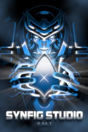
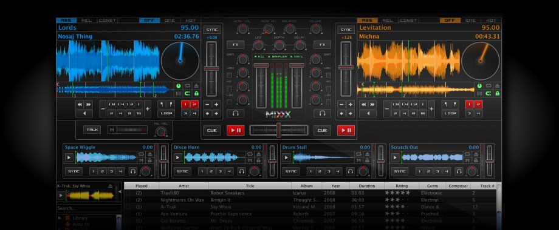

GIMP 2.8
GIMP is a GNU Image Manipulation Program. This freely distributed software is used for photo retouching, image composition and image authoring. Supported several platforms.
Inkscape
Inkscape is a professional free and open source vector graphics editor for Windows, Mac OS X and Linux. Features include flexible drawing tools, broad file format compatibility, powerful text tool.
Synfig
Synfig Studio is a free and open-source 2D animation software, designed as powerful industrial-strength solution for creating film-quality animation using a vector and bitmap artwork.
Mixxx
Mixxx provides everything you need to start making DJ mixes. Whether you're DJing your next house party, spinning at a club, or broadcasting as a radio DJ, Mixxx has what you need to do it right.